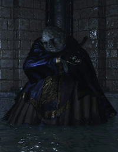

|  |
Archdeacon McDonnellThe deacons, under the guidance of Archdeacon McDonnell, became both Clergymen and sorcerers. A sorcerer as well as a former cleric, Archdeacon McDonnell is one of the three Archdeacons of the Deep and one of Aldrich's most loyal lieutenants, alongside Royce and Klimt. When Aldrich set off to Anor Londo to face Pontiff Sulyvahn, McDonnell cast off his white crown to stand at Aldrich's side. It is said that McDonnell imparted the spell Deep Soul to Royce and his followers. He is the leader of the Aldrich Faithful covenant. |